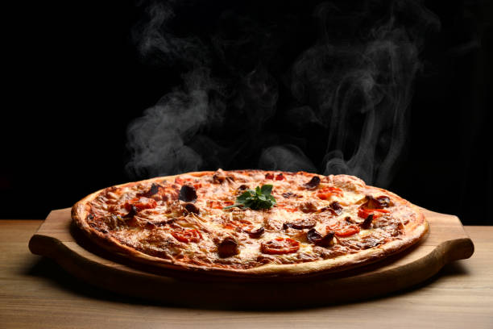

Home
Pizza Recipe

Description
Pizza is a globally beloved Italian dish originating from Naples,
consisting of a flat, round base of leavened wheat dough topped with tomatoes, cheese, and various other ingredients.
The dough is typically stretched thin, baked at high temperatures in a wood-fired or conventional oven, and served hot.
While the classic Margherita features tomato, mozzarella, and basil,
modern variations include countless toppings ranging from meats to vegetables and even fruits.
The dish holds significant cultural importance, with the art of the Neapolitan pizzaiolo recognized by UNESCO as an Intangible Cultural Heritage.
Styles vary widely by region, from the soft, chewy crust of Naples to the thin, crispy base of Rome and the deep-dish varieties found in the United States.
It is a staple of fast food and fine dining alike, celebrated for its versatility and communal appeal.
Ingredients
- Dough: 3 ½ to 4 cups all-purpose or bread flour, 1 packet (2 ¼ tsp) instant yeast, 1 ⅓ cups warm water, 2 tbsp olive oil, 1 tsp salt, 1 tbsp sugar (optional)
- Sauce: 1 cup pizza sauce or crushed tomatoes, 2 cloves garlic (minced), 1 tsp dried oregano, 1 tsp dried basil, salt, and black pepper
- Toppings: 4 cups shredded mozzarella cheese, ½ cup grated Parmesan cheese, plus optional toppings like pepperoni, vegetables, or cooked meats
- Finish: Cornmeal (for dusting), extra olive oil for brushing
Steps
- Make Dough: Dissolve yeast and sugar in warm water; let sit for 5 minutes until foamy. Mix in flour, olive oil, and salt; knead for 5 – 7 minutes until smooth and elastic.
- Rise: Place dough in a greased bowl, cover, and let rise in a warm place for 60 – 90 minutes or until doubled in size.
- Prep: Preheat oven to 475°F (245°C). If using a pizza stone, place it in the oven while heating. Punch down dough and divide into two balls.
- Shape: On a floured surface (or cornmeal-dusted peel), stretch each ball into a 12-inch circle, forming a slight rim around the edges.
- Top: Brush crust lightly with olive oil. Spread sauce evenly, leaving the rim bare. Sprinkle with mozzarella and add desired toppings.
- Bake: Bake for 12 – 15 minutes (on a stone or baking sheet) until the crust is golden and cheese is bubbly.
- Serve: Let cool for 2 – 3 minutes, slice, and serve immediately.